Estás viendo datos de prueba (8 jugadores ficticios). Para ver resultados nuevos, carga un archivo CSV exportado de Gazepoint (Data Summary) con el botón Cargar CSV.
Penalización −5/sRecompensa +5/sRecompensa alta +10/s· solo cuentan fijaciones ≥ 0,2 s
¡Bienvenido al juego de Avistamiento de Aves en la Selva!
Explora escenas de selva, busca las aves que dan más puntos y evita las que los quitan. Mientras juegas, un eye tracker registra hacia dónde miras.
👋 ¿Qué es «Avistamiento de Aves en la Selva»?
Un juego de atención visual con eye-tracking para niños de 11 a 15 años.
El participante explora escenas de selva buscando aves de colores para ganar puntos. Mientras juega, el eye tracker registra hacia dónde mira en cada momento.
El juego mide dos capacidades cognitivas: búsqueda visual activa — encontrar el ave amarilla, la de mayor valor y la más difícil de ubicar — y control inhibitorio — evitar quedarse mirando las aves moradas, que penalizan aunque sean las más llamativas de la escena.
🎥 El eye tracker: Gazepoint GP3HD
El GP3HD es un eye tracker remoto: se coloca bajo la pantalla y mide la mirada sin ningún contacto con el participante. Registra la posición de los ojos muchas veces por segundo; con el software Gazepoint Analysis se dibujan zonas de interés (AOIs) sobre cada ave y se obtiene cuánto tiempo se fijó la mirada en cada una.
Tipo
Remoto, sin contacto
Frecuencia
60 Hz
Distancia ojo–pantalla
≈ 65 cm
Software
Gazepoint Analysis v7.1
Instalación del equipo
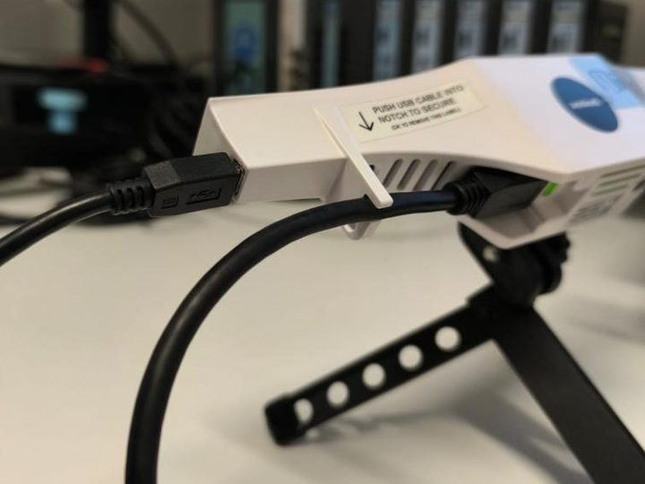
1. Conexiones. Conecta el cable de datos y el de poder al escáner y a los puertos USB del computador donde se presentan los estímulos. Apoya el escáner en el trípode para evitar movimientos no deseados.
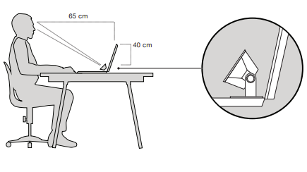
2. Ubicación. Apunta el escáner hacia los ojos del participante, a unos 65 cm y 40 cm por debajo del nivel de los ojos. El soporte para la cabeza ayuda a mantener quieta a la persona, pero no es obligatorio. Asegúrate de que esté cómoda.
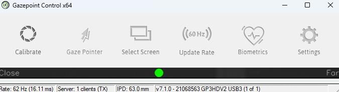
3. Gazepoint Control. Mantiene el escáner en funcionamiento y permite calibrar. El indicador verde del centro confirma la distancia apropiada al estímulo. Abajo se ve la frecuencia (62 Hz) y el modelo (GP3HD).
Imágenes de la presentación «Uso de Eye Tracker V1» del Semillero de Cognición. Se omitió la vista de los ojos del participante.
🎯 Calibración (antes de cada participante)
Sienta al niño cómodo y centrado frente a la pantalla, a ~65 cm, con la cabeza estable y la mirada a la altura del monitor.
Verifica en Gazepoint que los dos ojos se detectan bien (ventana de seguimiento) y ajusta altura/distancia si hace falta.
Lanza la calibración de 5 o 9 puntos y pide al niño que siga el punto sin mover la cabeza.
Valida la precisión; si algún punto quedó impreciso, repite la calibración.
Antes de empezar, fija el Fixation Filter en 200 ms y la duración de cada estímulo por nivel.
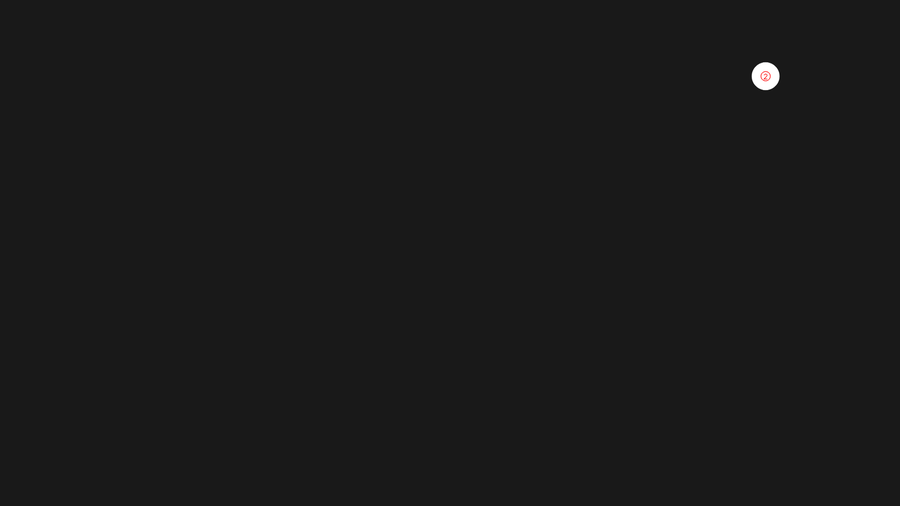
Durante la calibración. El participante sigue con la mirada cada punto que aparece: uno al centro y uno en cada esquina.
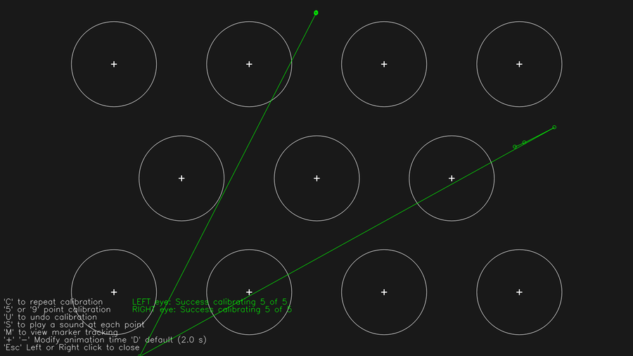
Validación. La mirada debe pasar por al menos 5 puntos. Si alguno queda impreciso, repite la calibración.
Recordatorios de configuración — Fixation Filter: 200 ms · Duraciones: E1–E2 5,0 s · E3–E4 4,5 s · E5–E6 4,0 s · E7–E8 3,5 s · E9–E10 3,0 s.
Hay 3 categorías funcionales, cada una con 2 colores. El puntaje depende de la categoría, no del color exacto.
Aves
Categoría
Colores
Valor
Saliencia
Dificultad
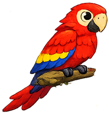
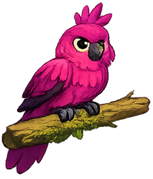
Penalización
Rojo · Magenta
−5 /s
Muy alta
Muy baja
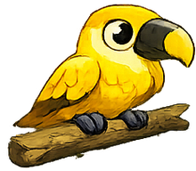
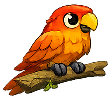
Recompensa
Amarillo · Naranja
+5 /s
Media
Media
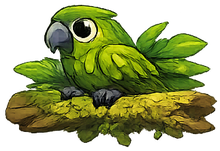
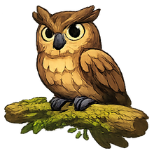
Recompensa alta
Verde oliva · Marrón
+10 /s
Baja
Alta
Sobre el verde de la selva, el rojo y el magenta contrastan al máximo y se detectan solos; el verde oliva y el marrón se camuflan con hojas, ramas y corteza. A propósito, la recompensa más alta es la más difícil de encontrar.
🧠 La idea: saliencia ≠ valor
El sistema invierte la relación habitual entre lo que más llama la atención y lo que más conviene mirar. Lo más vistoso (rojo y magenta) penaliza; lo más valioso (verde y marrón) está camuflado y hay que buscarlo activamente.
Esto enfrenta dos sistemas atencionales: la atención bottom-up, capturada de forma automática por la saliencia (favorece rojo y magenta), y la atención top-down, guiada por metas y estrategia (necesaria para encontrar el verde y el marrón). El buen desempeño exige inhibir lo llamativo y sostener una búsqueda dirigida por objetivos.
Predicción de eye-tracking: las primeras fijaciones tienden a ir al rojo/magenta (saliencia); los participantes con mejor desempeño aprenden a ignorarlos y aumentan las fijaciones sobre las aves verdes y marrones. Esto permite estudiar el paso de atención automática a atención dirigida por objetivos.
🧮 Cómo se calcula el puntaje
El puntaje total es la suma, sobre todas las aves, del tiempo de fijación multiplicado por el valor del color — contando solo las fijaciones realmente intencionales:
Puntaje = Σ ( tiempo_fijación × valor ) · solo fijaciones ≥ 0,2 s
Umbral de 200 ms. Una mirada que dura menos de 0,2 s es un barrido reflejo, no atención sostenida: no suma ni resta. En datos piloto, el 39 % de las fijaciones quedaban por debajo de ese umbral. Así, una penalización solo ocurre cuando el participante decidió quedarse mirando un ave roja o magenta.
Un tiempo de −1 (AOI nunca visto) cuenta como 0. La penalización (−5/s) resta a la misma tasa que la recompensa media (+5/s): el error es recuperable y no desmotiva.
👁️ Qué mide el eye tracker y qué usamos
Del Data Summary de Gazepoint tomamos varias medidas; solo una entra al puntaje, el resto enriquece el análisis.
Medida (columna Gazepoint)
Para qué se usa
Time Viewed (sec) — tiempo de fijación por AOI
Núcleo del puntaje (con el umbral de 0,2 s)
Time to 1st View — tiempo hasta la 1ª fijación
Métrica de búsqueda: TTF en la recompensa alta (verde/marrón)
Fixations (#) — nº de fijaciones
Métrica de exploración (vista investigador)
Revisits — revisitas al AOI
Métrica de re-enganche atencional
Pupila (L/R)
Métrica exploratoria (vista investigador)
El desempeño se calcula solo con Time Viewed (sec) por AOI ≥ 0,2 s. Las demás medidas no afectan el puntaje; sirven para interpretar la estrategia en la pestaña Investigador.
🏅 Desempeño final y clasificación
El puntaje continuo se traduce a una categoría para comunicarla al participante.
Nivel
Rango
Significado
🏆 Maestro Avistador
> 100 pts
Control atencional óptimo: ignoró los distractores y buscó la recompensa alta camuflada.
🥇 Avistador Experto
50 – 99 pts
Estrategia eficiente: combina recompensas medias y altas.
🥈 Explorador
0 – 49 pts
Explora, pero sin una estrategia de búsqueda clara.
🥉 Aprendiz
Negativo
Los distractores rojos y magenta fueron muy tramposos: más práctica.
El análisis de investigación siempre usa el puntaje continuo; la clasificación es solo para comunicar el resultado de forma amigable.
🎮 ¿Cómo se juega?
Un juego de exploración para chicos y chicas de 11 a 15 años.
Eres un avistador de aves en la selva. En cada escena aparecen varias aves de colores escondidas entre las plantas… y solo tienes unos pocos segundos para mirarlas antes de que aparezca la siguiente.
El truco está en dónde pones los ojos: el juego registra hacia dónde miras. Algunas aves te dan puntos y otras te los quitan, así que conviene elegir bien a cuáles dedicarles la mirada.
🐦 Qué aves buscar (y cuáles evitar)
No te dejes engañar: las más vistosas no siempre son las que más convienen.
Aves
¿Qué pasa si las miras?
Truco
Verdes y marrones
Te dan MÁS puntos (+10/s)
Están camufladas con las hojas y ramas: hay que buscarlas con atención.
Amarillas y naranjas
Te dan puntos (+5/s)
Se ven con una búsqueda corta. Son un buen apoyo.
Rojas y magenta
Te QUITAN puntos (−5/s)
Son las más llamativas: ¡es una trampa! Mejor no te quedes mirándolas.
👀 Así se ve una escena
Dos escenas de ejemplo del juego. Prueba a encontrar las aves verdes y marrones: son las que más valen.
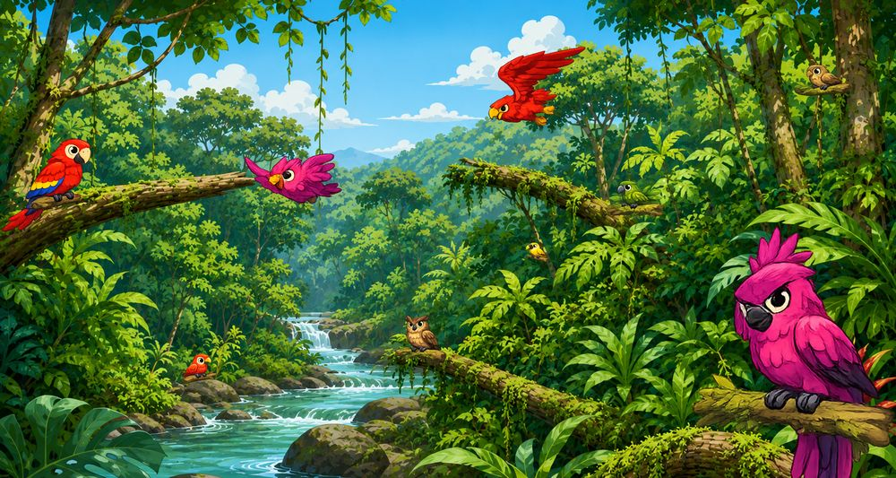
Nivel 1 · Calentamiento (E1). 5,0 s para mirar. Pocas aves de penalización y las de recompensa se ven con facilidad.
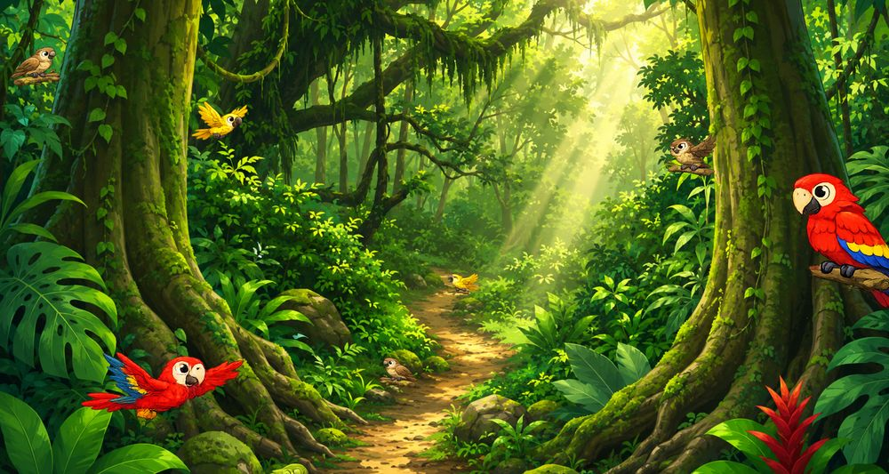
Nivel 5 · Maestro (E10). 3,0 s para mirar. Las aves de recompensa alta quedan muy camufladas entre la vegetación.
🏁 Las reglas en 4 pasos
Observa cada escena de selva apenas aparece.
Busca las aves verdes y marrones (las que más valen) y míralas: están escondidas, así que toca rastrear.
Evita quedarte mirando las rojas y magenta, aunque salten a la vista: te restan puntos.
Repite en cada escena. El juego va de fácil a difícil, con menos tiempo y más distractores en cada nivel.
Solo cuenta cuando te quedas mirando un ave de verdad (al menos 0,2 segundos). Un vistazo rapidísimo de reojo no suma ni resta.
🏆 ¿Cómo se gana?
Al final se suman tus puntos y obtienes una medalla según tu desempeño:
Si juegan varias personas, se arma un podio con quienes consiguieron más puntos. ¡A ver quién es el mejor avistador de la selva! 🦜
🏅 Ranking de avistadores
Cuánto ganó cada quien. Las barras hacia la izquierda son penalizaciones por mirar aves rojas o magenta.
🔥 Mapa de atención por escena
Puntaje neto de cada participante en cada estímulo (verde = ganancia, rojo = penalización por distractores morados).
Este mapa se deriva del tiempo de permanencia por AOI del Data Summary. Para mapas de calor de coordenadas de mirada se requiere el export de gaze points crudos de Gazepoint (no incluido en el AOI Summary).
👁 Métricas de eye-tracking
Indicadores por participante para análisis de búsqueda visual y control inhibitorio.
TTF rec. alta = tiempo medio hasta la primera fijación válida en un ave de recompensa alta (verde/marrón), el objetivo de la búsqueda dirigida. Altas vistas = aves de máxima recompensa localizadas sobre el total. Tiempo de penalización alto + puntaje bajo sugiere control inhibitorio débil (capturado por el rojo/magenta).